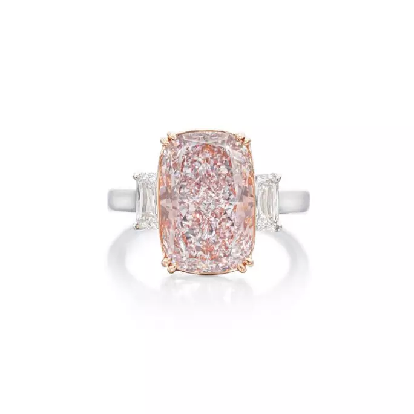
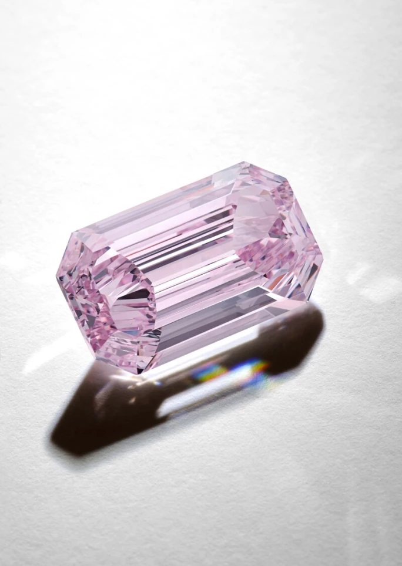
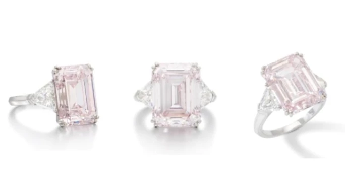
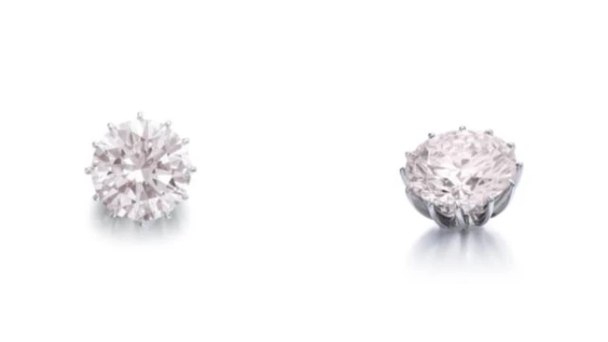
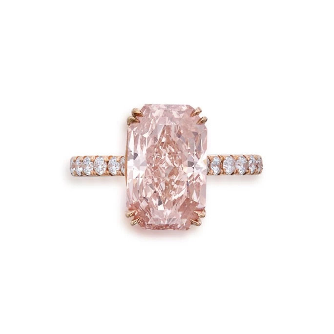
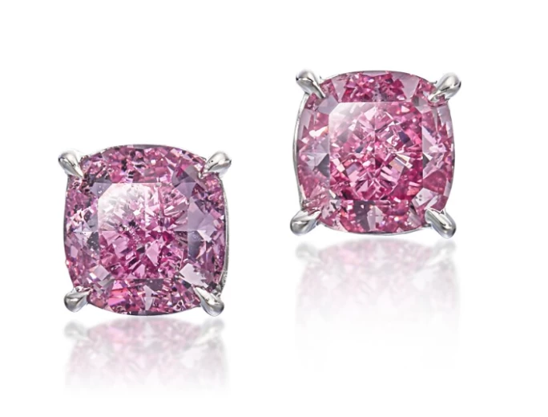
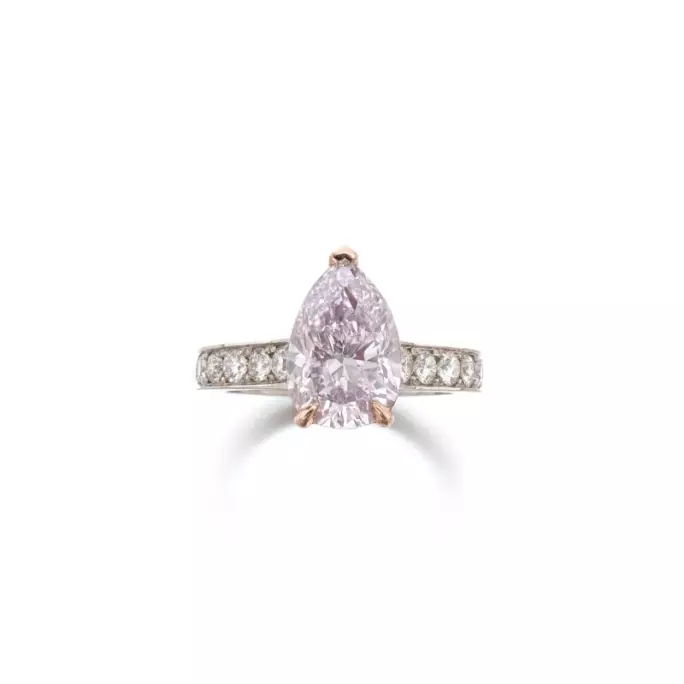
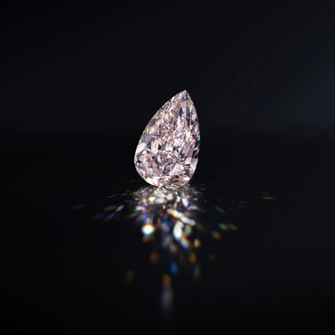
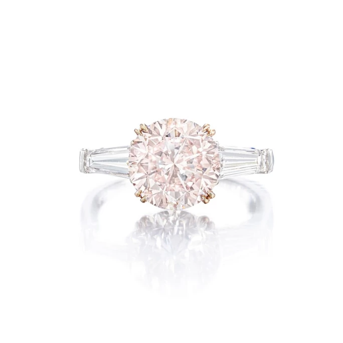
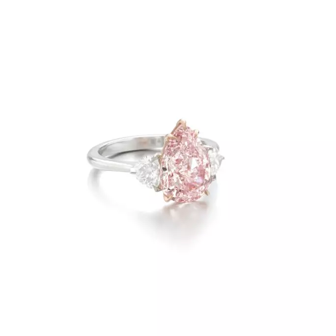

譯自 Lydia Dokko · Sotheby's
深入了解粉紅鑽石，細賞 2024 年拍賣臻品。
粉紅鑽石簡史
粉紅鑽石之記載，最早可追溯至 17 世紀初的印度，當時在安得拉邦貢土爾區的科盧爾礦場首度面世，該地隸屬傳奇的戈爾孔達王國。當中聞名遐邇的「Daria-i-Noor」乃一枚重約 186 克拉的淡粉紅巨鑽，堪稱此時期最碩大且最負盛名的瑰寶之一。時至 20 世紀，隨著 1983 年阿蓋爾礦場的發現，澳洲隨即躍升為粉鑽的主要產地，其產量一度佔全球天然粉鑽供應逾九成。不過，該礦場已於 2020 年正式停產，致使全球供應銳減。阿蓋爾出品的粉鑽，皆附有其專屬鑑定報告與產地來源證書，詳載其獨有的色彩評級系統。儘管印度、南非、加拿大、俄羅斯與巴西等地亦偶有產出，澳洲至今仍是粉鑽最主要的來源地。
粉鑽的獨特色彩，與其他彩鑽迥異，其成因並非尋常的致色元素，而是源於其形成之際，地殼內部發生的微妙地質變化。尋常彩鑽的繽紛色調，多來自在碳晶體結構形成時滲入的微量元素；然而粉紅鑽石是個特例，當中並無此類微量元素。相反，其粉紅色調被認為是由鑽石形成後，在地殼中經歷極高溫度和壓力所造成的晶格扭曲所致。這種扭曲導致碳原子偏離其原有位置，進而改變了光線在鑽石內部的折射路徑，最終呈現出獨特的粉紅光彩。此等非凡的地質奇蹟，孕育出一些全球藏家夢寐以求的傳奇名鑽，其中包括重達 31.68 克拉的梨形切割「The Desert Rose」，其濃郁的艷彩橘調粉紅色澤，尤為矚目。蘇富比深感榮幸，在 2025 年 4 月 9 日至 10 日在阿布扎比隆重舉行的「Beyond the World's Rarest Diamonds」上，呈獻此枚稀世瑰寶。
粉紅鑽石色彩等級系統
在粉鑽的評級中，色彩實為首要關鍵。其色彩屬性涵蓋色相（主色），以及任何可能存在的修飾色（副色）。明暗度則指色彩的深淺層次。粉鑽的明暗度可由極淡延伸至深濃，當中以中等明暗度者普遍最受追捧。至於飽和度，則是用以衡量色彩的濃郁程度。
GIA 粉紅鑽石色彩等級表：
微
極淡
淡
淡彩
彩
濃彩
艷彩
深彩
粉鑽常帶有修飾色，包括：最受追捧的紫粉紅色、棕粉紅色、橙粉紅色、紅粉紅色、灰粉紅色，以及至為稀有的黃粉紅色。
粉紅鑽石之淨度評級，亦與白鑽相仿，等級由完美無瑕（Flawless）至含有內含物（Included）不一。切工之評鑑標準，同樣參照白鑽，涵蓋比例、對稱性及拋光。至於粉鑽最受青睞的花式切割，則包括枕形、方形、橢圓形及梨形，皆因此等形狀不僅能彰顯其天然色澤，更能於切磨過程中最大限度保留原石。克拉重量之計算方式，與白鑽無異。蘇富比建議藏家在選購粉鑽時，務必以附有 GIA 鑑定證書者為首選。事實上，逾 1 克拉之粉紅鑽石屬鳳毛麟角，全球開採所得的鑽石之中，天然粉紅鑽石的佔比僅約 0.01%。

枕形淡彩紫粉紅鑽石，6.14 克拉，天然色彩，內部無瑕
蘇富比經典粉鑽成交選輯
每年，蘇富比均有幸呈獻一些舉世罕見的粉紅鑽石，其成交價屢屢刷新拍賣紀錄。粉鑽之所以備受藏家青睞，不僅在於其世所罕見，更因其象徵著美麗、愛情以及深受皇室貴族與名流雅士的垂青。歷年來，粉紅鑽石的價值持續穩健上揚；而自 2020 年阿蓋爾礦場停產以來，此升值趨勢更見顯著。
敬請一同細賞蘇富比 2024 年度甄選的粉紅鑽石。

濃彩紫粉紅鑽石祖母綠切割，7.00 克拉，天然色彩，內部無瑕
濃彩紫粉紅鑽石 7.00 克拉｜340 萬美元
蘇富比在 12 月成功拍出一枚重達 7.00 克拉的祖母綠切割濃彩紫粉紅鑽石，其色彩天然，內部無瑕，成交價高達 430 萬美元。祖母綠切割之粉鑽頗為罕見，因為梨形、方形與枕形等切割方式更能保留鑽石原石重量，減少耗材。達「濃彩」評級之粉鑽亦備受藏家追捧，因其色澤不僅更顯飽滿濃郁，且粉紅綺麗之色調亦越加鮮明突出。

橙粉紅鑽石祖母綠切割，12.52 克拉，VVS2 淨度
祖母綠切割彩橙粉紅鑽石 12.52 克拉｜320 萬美元
蘇富比成功拍出一枚彩橙粉紅鑽石，成交價 280 萬瑞士法郎（即 320 萬美元）。此枚重 12.52 克拉的祖母綠切割粉鑽，其成交價遠超估價 80 萬瑞士法郎達四倍之多。GIA 鑑定證書載明，此枚粉鑽戒指色澤為彩橙粉紅，天然色彩，淨度達 VVS2 級別。粉紅鑽石多採用梨形、方形或枕形切割，此舉旨在減少切磨過程中的原石耗損。如此尺寸之粉紅鑽石，鮮有採用祖母綠切割，皆因階梯式切割對鑽石淨度要求極高，方能成就最終瑰麗的成品。此枚卓爾不凡的粉紅鑽石戒指引來七位藏家激烈競投，最終創下令人矚目的驕人佳績。

圓形明亮式切割極淡粉紅鑽石，16.73 克拉，天然色彩，VVS1 淨度，打磨及對稱度均達極優級別，IIa 型
圓形極淡粉紅鑽石吊墜 16.73 克拉｜140 萬美元
蘇富比於 11 月成功拍出一枚圓形明亮式切割極淡粉紅鑽石，成交價 130 萬瑞士法郎（即 140 萬美元）。此枚重達 16.73 克拉的粉紅鑽石，色澤評定為極淡粉紅，天然色彩，淨度達 VVS1 級別，其打磨及對稱度均臻極優水平，且屬珍罕的 IIa 型鑽石。此鑽碩大之尺寸，輔以尊貴的 IIa 型特質，令其身價斐然，備受珍視。

切角長方形混合式切割彩橙粉紅鑽石，5.02 克拉，天然色彩，VVS1 淨度，IIa 型
彩橙粉紅鑽石 5.02 克拉｜68.4 萬美元
12 月，蘇富比成功拍出一枚以切角長方形混合式切割，重 5.02 克拉的彩橙粉紅鑽石，成交價 68.4 萬美元。此枚鑽石色澤天然，淨度達 VVS1 級別，且屬珍貴的 IIa 型。主石鑲嵌於 18K 玫瑰金之上，周圍襯以 0.55 克拉的 F 至 G 色 VS 淨度白鑽。

一對艷彩紫粉紅鑽石與艷彩紫粉紅鑽石耳環
一對艷彩紫粉紅鑽石與艷彩紫粉紅鑽石耳環 2.35 克拉｜420 萬港幣
2024年 12 月，蘇富比成功拍出一對枕形切割艷彩紫粉紅鑽石耳環，成交價 420 萬港元。此對耳環分別鑲嵌一枚重 1.31 克拉，以及一枚重 1.04 克拉的枕形切割艷彩紫粉紅鑽石。兩枚主石均展現出超卓的色澤飽和度與耀目火彩，整體設計精巧雅緻，配以耳針及蝴蝶形耳扣。

梨形彩粉紫鑽石，3.06 克拉，天然色彩，VS2 淨度
梨形彩粉紫鑽石，3.06 克拉，天然色彩，VS2 淨度
蘇富比於 5 月成功拍出一枚梨形切割彩粉紫鑽石，成交價 445,500 瑞士法郎（即 50 萬美元）。此枚重 3.06 克拉之粉紅鑽石，其 GIA 鑑定證書載明色澤為天然，淨度達 VS2 級別。

極淡粉紅鑽石，10.19 克拉，天然色彩，SI1 淨度
梨形極淡粉紅鑽石 10.19 克拉｜43 萬美元
蘇富比於 10 月以 336 萬港幣（即 43 萬美元）售出一枚梨形極淡粉紅鑽石。這顆粉紅鑽石重 10.19 克拉，GIA 報告顯示為天然色彩，SI1 淨度。凡逾 10 克拉之粉紅鑽石，皆屬市場瑰寶，深受藏家青睞。

圓形彩粉紅鑽石戒指，3.64 克拉，天然色彩，內部無瑕，50 萬美元成交
粉紅鑽石價格
天然粉紅鑽石的價格差異極大，但總體而言，其價格遠高於相似淨度和克拉重量的白鑽。在所有開採的鑽石中，僅約 0.01% 為天然粉紅鑽石。2020 年阿蓋爾礦場的關閉大幅減少了全球供應，導致各種尺寸的頂級品質粉紅鑽石價格上漲。
史上最昂貴的粉紅鑽石是蘇富比於 2017 年以 7,100 萬美元售出的「周大福粉紅之星」，重達 59.60 克拉，屬內部無瑕的艷彩粉紅鑽石。該原石由戴比爾斯（De Beers）於 1999 年在非洲開採，重達 132.5 克拉，後由迪亞科爾（Diacore）耗時兩年精心切割與打磨，方蛻變為此枚璀璨奪目的臻美寶石。蘇富比拍出的五枚最頂級粉紅鑽石，其價格範圍從2,700 萬美元至7,100 萬美元不等。
色澤品級略遜、約 1 克拉的粉紅鑽石，價格約介乎 15,000 至 20,000 美元之間。而色澤上乘、約 1 克拉者，起價可近 3 萬美元。2024 年，蘇富比曾以 35,000 美元拍出一枚 0.88 克拉的天然艷彩紫粉紅鑽石，淨度達 I1 級。至於兩克拉或以上的粉紅鑽石，其價格區間甚廣：品質中等或略遜者，起價一般逾 10 萬美元；而品質上乘者，價格甚至可超越 40 萬美元。

梨形切割淡彩粉紅鑽石，3.74 克拉，天然色彩，VS1 淨度